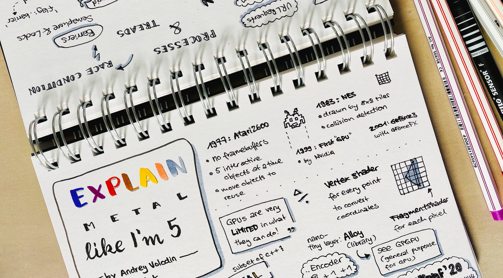

Oct 11, 2020 ⋅ 6 min read
Me, my new iPad Pro and the Apple Pencil
Since 2018, I make sketchnotes of conference talks and lots of other things. I've always used pen and paper for it. As an iOS developer, I spend much of my time on my MacBook and my iPhone and somehow I wanted to hide from all the digital stuff. I also love to have one book with all sketchnotes, and to be able to browse through the book and remember everything easily.
What has changed my opinion?
The release of Scribble for iPad, in September 2020, really made me want to have an iPad with Apple Pencil again. It's always Apple and their really good marketing videos. They always get me. 🙈
(For more about Scribble, see Meet Scribble for iPad or my sketchnote about it)
What I have wished for...
First wish
Sometimes, I'm having trouble to start projects, like sketchnotes, letterings or just drawing random things. I want to do it, but I'm afraid to waste paper because the result wouldn't look like I imagined it and I have to start over.
I know drawing and sketchnoting isn't about perfection and I have to learn a lot, so I shouldn't expect a perfect result from me. But this thought simply kept me from starting.
I wished that the iPad would help me with this. To start projects and to save paper.
Second wish
Another thing that I often have issues with, is dividing the space so that everything fits on one page. This is really difficult when you don't know what the talk is about in detail and you do a live sketchnote. Sometimes, I started to write too big for not so important information and had no place for the important things at the end.
Using an iPad would definitely help me with that because I could resize things or simply change the canvas size.
Third wish
There are a lot of manual steps to digitalize the paper sketchnote to an image which can then be shared on social media.
To share a sketchnote, I use Apples Files app to scan the sketchnote. Sadly, this always results in a .pdf, so I have to airdrop it to my MacBook and convert it to .jpg (or something else) because .pdf can't be posted on twitter. When converting the document, I always increase the distance to the edges, so the content has a bit more space. After the conversion and the editing, I can finally share the image on twitter.
Of course, using an iPad would help me with that because I can use the same device to edit, export and share the image.
Fourth wish
Of course, one of my goals is to improve my apps for the iPad, but for that, I have to first learn about "iPad patterns". Which kind of navigation should be used, a tab bar or a side bar? Should this be a detail view or a pop up? So, when I now use the iPad more often I want to have a detailed look at some existing apps and then to improve mine.
So, one evening, I just ordered it. Sadly the order took four weeks. The Apple Pencil even arrived one week earlier, and I had two wait another week until I could finally use it. It was my deserved belated birthday present.

The "Get To Know" Phase
Directly after unpacking and initial set up, I downloaded some of my favorite apps which I already use on my iPhone. My first additional purchase was the Procreate app. This is one of the most famous app for drawing with Apple Pencil support. The app is simple on the first glance, so it's easy to start with and you can instantly try out all the different brushes. But the app can also be a bit overwhelming because you can do soooo much!
Procreate has an awesome "Learn to Procreate" Playlist in YouTube which are 2 to 3 minute videos explaining features of the app.
Tip: To not be overwhelmed, try to only learn one feature in a week and not everything at once.
It's so fun to browse through YouTube and peek into Procreate tutorials from amazing artists and try out new things. There are tons of Procreate tutorials in YouTube!
How do I like it now?
After using the iPad for about six weeks now... I can say, it was a journey from being super excited at first, over overwhelmed, to pretty confident. It's definitely different to draw on an iPad than on paper, but you're getting used to it after some time. The Paperlike iPad Screen Protector helped me with this. It feels (and sounds) a lot more like drawing on paper.
iOS 14 was released and I could try out Scribble. I really like it because I don't have to put the pencil away to type something. But from time to time I find myself activating Scribble when I don't want to use it. Sometimes I start typing in "textfields" I haven't even seen, so I constantly rename my color palettes by mistake. Mh, maybe that's just me.
Were my wishes fulfilled?
- Help me with getting started. Check. ✅
- Help me dividing space. Check. ✅
- Help me digitalize the sketchnote. This one's easy, it's already digitalized. Check. ✅
- Learn more about "iPad Patterns" and improve some apps (not really happened yet, but will do it some day!)
Looks like the iPad was a total success for me, right?
The possibility to change and scale every element afterwards is a curse and a blessing at the same time. I've found out that after a live sketchnote, I still need another hour to revise the sketchnote so that I'm content with it.
The thought "It's good enough!" is now my new goal.
I've learned a lot at Sketchnote Connect 2020! My first sketchnoting conference ever! I've even submit a session about "Tips and Tricks for Sketchnoting in ProCreate, where I found out that others felt overwhelmed as well when they changed from analogue to digital sketchnoting!
What's next?
- I'm thinking about sticking to pen and paper for live events to protect me from my perfectionism...
- I want to "just start" more often!
- Practice, practice, practice!
- Having fun! 😊
- Maybe I'll take part in one more iOS conference this year, to train my sketchnote on iPad skills? #NSSpain2020